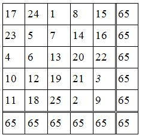
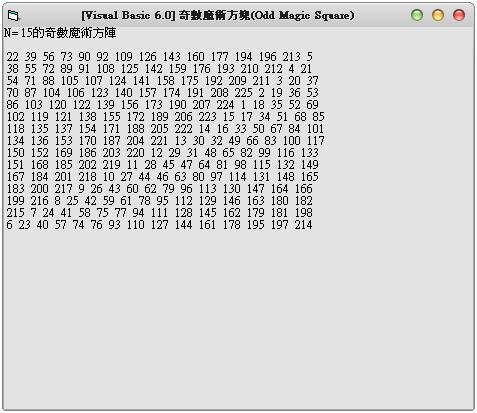

Visual Basic 6.0: 奇數魔術方塊(Odd Magic Square) 詳細解法 (作者：廖憲得 0xde)
什麼是奇數魔術方陣 (?)
魔術方塊是許多人想要解決的一個古老的數學問題，您可能在一些雜誌上看過，也可能您的老師有介紹過。一個魔術方塊是在於安排數字在一矩陣
[n*n]中，從 1 到 n^2, 每一數字僅出現一次,而且，任一列、任一行或任一對角線的總和都相同。求總和的公式要證明為n*[ ( n^2 + 1) / 2]，並不是很困難，若我們利用這個公式，對[5*5]矩陣而言，其總和為5*[ ( 5^2 + 1 ) / 2 ] = 65，其對應的魔術方塊輸出如下：


'# [Visual Basic 6.0] 奇數魔術方塊(Odd Magic Square)
'# 0xDe
Dim InputN
Dim Squate()
Private Sub Form_Activate()
'------------------------------
InputN = 3 ' 輸入 (必須為奇數)
'------------------------------
'------------------------------
If InputN Mod 2 = 0 Then Exit Sub ' 判斷是否為奇數
'------------------------------
ReDim Square(InputN - 1, InputN - 1)
'------------------------------
Print "N= " & InputN & "的奇數魔術方陣" & vbCrLf
Randomize Timer ' 亂數產生
TempX = Int(Rnd * InputN) ' 隨機起始 X
TempY = Int(Rnd * InputN) ' 隨機起始 Y
'------------------------------
Do Until N = (InputN ^ 2) ' 直到放滿
If Square(TempX, TempY) = "" Then
N = N + 1
Square(TempX, TempY) = N
TempX = TempX - 1 ' 向上移
If TempX < 0 Then TempX = InputN - 1
TempY = TempY + 1 ' 向右移
If TempY > InputN - 1 Then TempY = 0
Else
' 恢復原本的狀態往下
TempX = TempX + 1
If TempX > InputN - 1 Then TempX = 0
TempY = TempY - 1
If TempY < 0 Then TempY = InputN - 1
' 往下
TempX = TempX + 1
If TempX > InputN - 1 Then TempX = 0
End If
Loop
'------------------------------
For I = 0 To InputN - 1 ' 將結果輸出
For J = 0 To InputN - 1
Print Square(I, J);
Next J
Print
Next I
'------------------------------
End Sub【本文作者為「廖憲得」，原文網址為： http://www.dotblogs.com.tw/0xde/archive/2013/11/13/129187.aspx ，由陳鍾誠編輯後納入本雜誌】